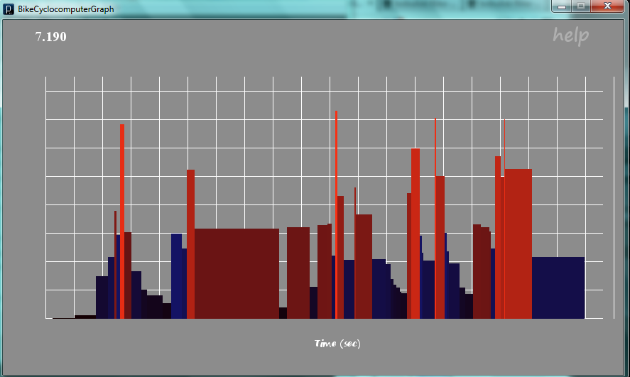
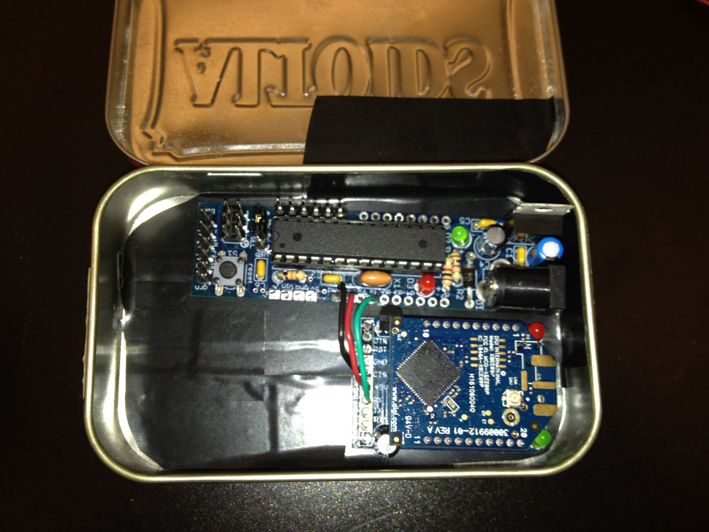
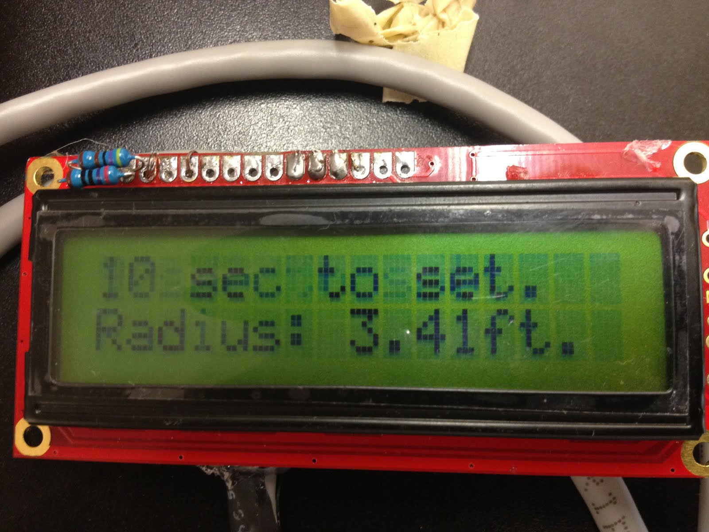
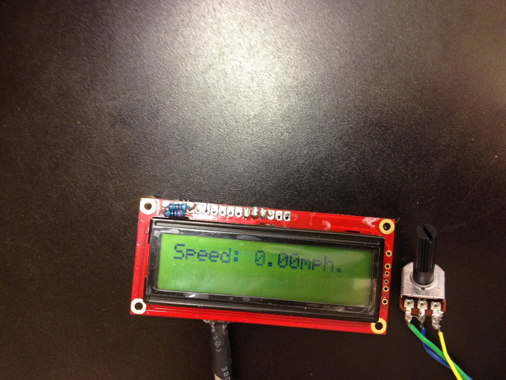
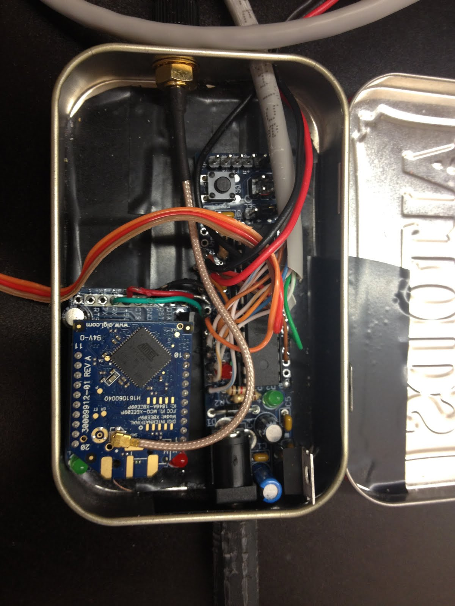
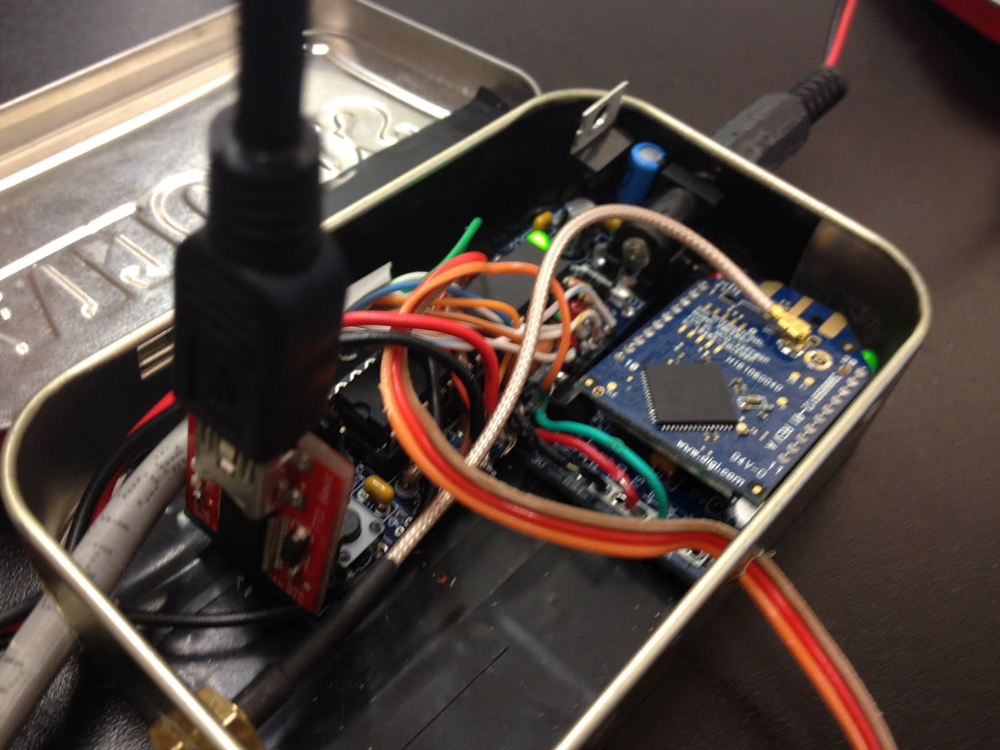
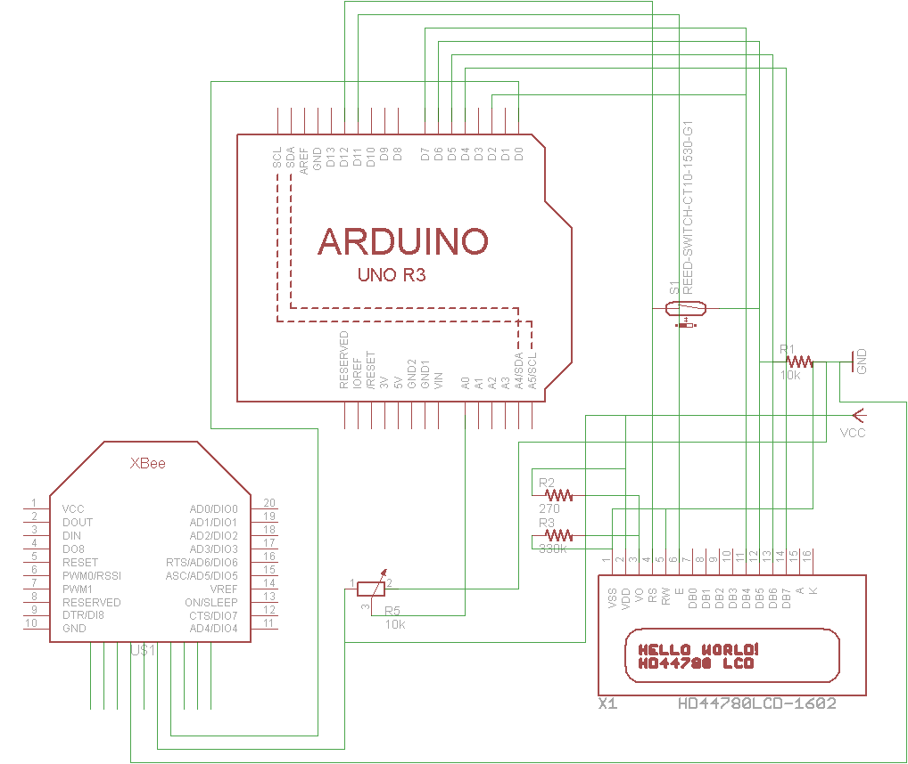

Welcome to Andrew M's Bike Cyclocomputer
This project is designed to accurately measure the speed of a moving bicycle, display this information to the rider on an LCD screen, and then transmit speed data back to a computer using XBee wireless modules. An LCD screen is wired to the boarduino; the XBee RX pin is attached to the Arduino's TX pin. On the bike wheel, a magnet is attached to a spoke. Nearby, a reed switch is stationary. The reed switch is monitored by an interrupt by the Arduino, permitting accurate, consistent readings.
The processing sketch reads serial data from an XBee and graphs it The processing sketch saves the data to a trip log on one's computer and transforms incoming speed data into a graph.
On the bike, when the magnetic reed switch senses a magnetic field, it is triggered, and its signal recorded by the Arduino. The time in between revolutions is measured and converted into MPH.
Part | Part number | Quantity | Price | Total | Supplier | URL |
Xbee Pro 900 U.Fl | 602-1168-ND | 2 | $39.00 | $78.00 | Digikey | |
2.4 GHz RP-SMA Duck Antenna | WRL-00145 | 2 | $7.95 | $15.90 | Sparkfun | |
RP-SMA to U.FL cable | WRL-00662 | 2 | $4.95 | $9.90 | Sparkfun | |
16x2 White on Black LCD 5v | LCD-00709 | 1 | $15.95 | $15.95 | Sparkfun | |
Spoke Magnet | 1-2 | $2.99 | $5.98 | Amazon | ||
Reed Switch | COM-10601 | 3 | $1.95 | $5.85 | Sparkfun | |
CAT5 Cable | 1 | $2.18 | $2.18 | Amazon | ||
9V Battery Case | 67 | 1 | $3.95 | $3.95 | Adafruit | |
FTDI Cable | 1 | Common part (Adafruit also has them). | ||||
Boarduino | 27 | 1 | $17.50 | $17.50 | Adafruit | |
Altoid Tins | Buy at a store. | |||||
Xbee Adapter Kit (Arduino) | 126 | 1 | $10.00 | $10.00 | Adafruit | |
Xbee Adapter Kit (Computer) | 247 | 1 | $20.00 | $20.00 | Adafruit |
 A graph of incoming speed data.
 The initial setup of the tin.
 The beginning screen of the lcd, ready for wheel radius to be set.
 Above, the wheel radius-setting potentiometer and the lcd displaying speed.
 The final setup of the tin.
 To program, a FTDI friend was used.

See the cyclocomputer in action here!
=======This project is designed to accurately measure the speed of a moving bicycle, display this information to the rider on an LCD screen, and then transmit speed data back to a computer using Xbee wireless modules. An LCD screen is wired to the boarduino; the Xbee RX pin is attached to the arduino's TX pin. On the bike wheel, a magnet is attached to a spoke. Nearby, a reed switch is stationary. The reed switch must be attached to either digital pin two or three to allow for an interrupt to be used.
The processing sketch reads serial data from an xbee and graphs it by drawing lines. The processing sketch saves the data and transforms incoming speed data into a graph.
On the bike, a magnetic reed switch senses a magnetic field; when a magnet passes by, it is triggered. The time in between revolutions is measured and converted into MPH.

Authors and Contributors
Created in June-July, 2012 by Andrew M. (@amilich).